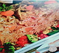
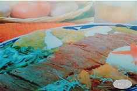

RECETARIOS DE comidas
-

POLLO A LA CASEROLA
1 POLLO CORTADO EN RACIONES,2 PAPAS,3 ZANAHORIAS COCIDAS, 10 EJOSTES COCIDOS,3 HOJAS DE LAUREL,1 RAMITA DE TOMILLO,1 DIENTE DE AJO,1 PEDAZO DE CEBOLLA,,1/2 KG DE JITOMATE COCIDO
PREPARACION;
AGREGE SAL AL POLLO Y PONGALO A FREIR Al RECIPIENTE, HASTA QUE ESTE BIEN COCIDO, LICUAR EL JITOMATE, EL DIENTE DE AJO Y LA CEBOLLA,ESTA MEZCLA SE PONE A FREIR EN UNA CASEROLA JUNTO CON EL TOMILLO Y LAS OJAS DE LAUREL Y SE DEJA SASONAR A FUEGO LENTO Y DESPUES AGREGELE EL POLLO CON LAS PAPAS EN TROZO, LAS ZANAHORIAS, LOS EJOTES Y LOS CHICHAROS, DEJANDO HERVIR POR 3 MIN,SE SIRVE CON UNAS HOJAS DE LECHUGA Y RODAJAS DE PEPINO
-

BISTECES DE AGUAYON EN CHILE ANCHO
1KG,DE BISTECES DE AGUAYON, 2 CHILES ANCHOS GRNADES,2 DIENTES DE AJO,2 CLAVOS,2 CEBOLLAS EN RODAJAS,4 CUCHARADAS DE ACEITE,1 PIZCA DE AZUCAR, SAL ALGUSTO
PREPARACION:
ASE LOS CHILES LIGERAMENTE SOBRE EL COMAL. SIN DEJAR QUE SE QUEME LIMPIELOS DE LAS SEMILLAS Y TENGALOS EN REMOJO UNOS MINUTOS EN AGUA CALIENTE. EN POCO ACEITE CALIENTE. FRIA LOS BISTECES CON POCA SAL: CUANDO ESTEN COCIDOS, AÑADALES LA SALSA, DEJE HERVIR ALGUNOS MINUTOS AGREGUE DE AGUA Y UN CHORRITO DE VINAGRE .DEJELO SAZONAR POR 5 MINUTOS Y RETIRE DEL FUEGO.